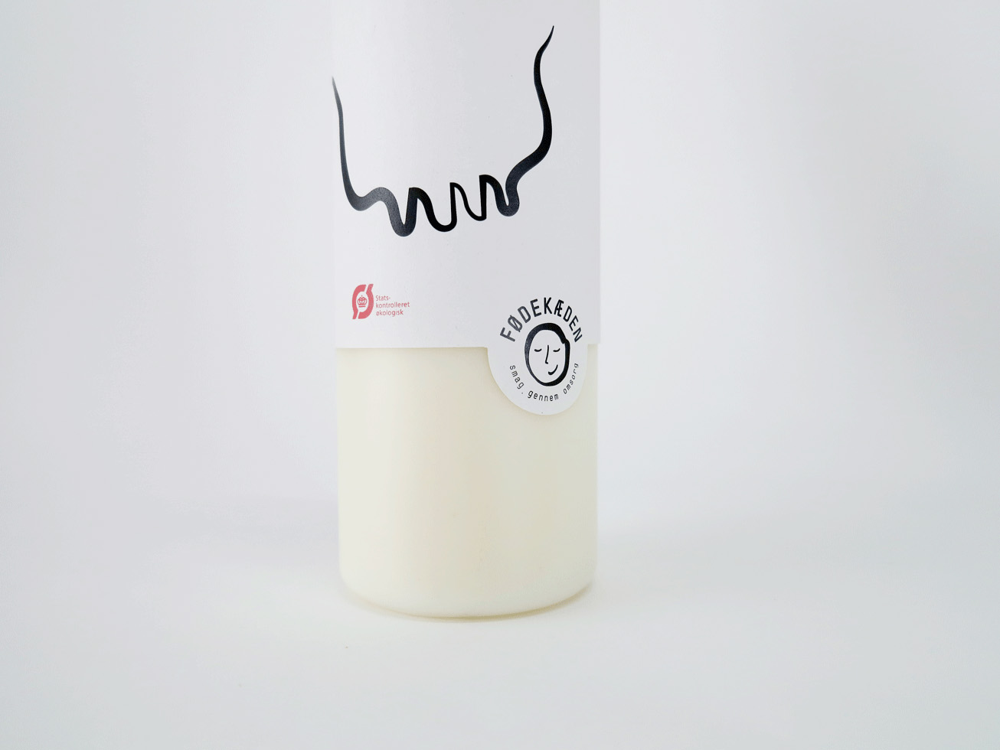
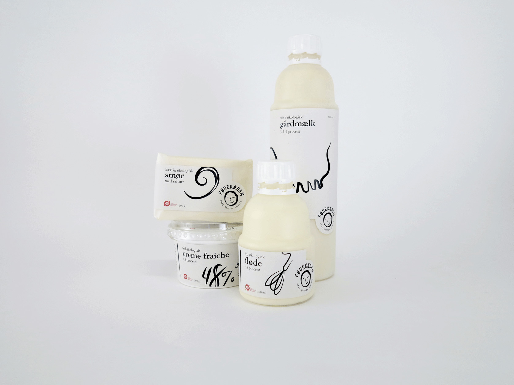
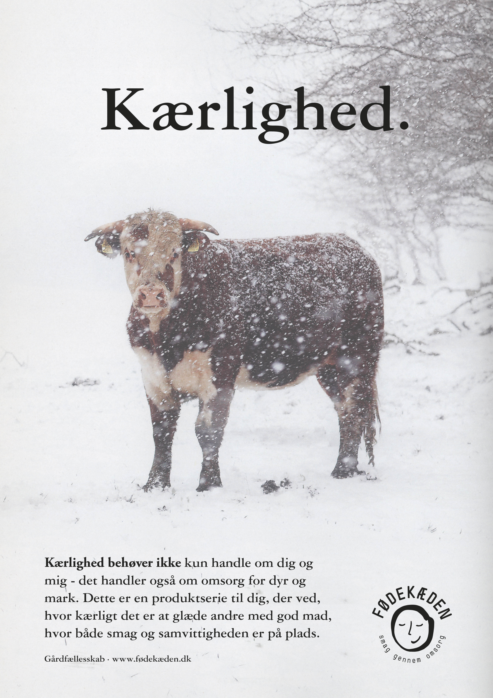
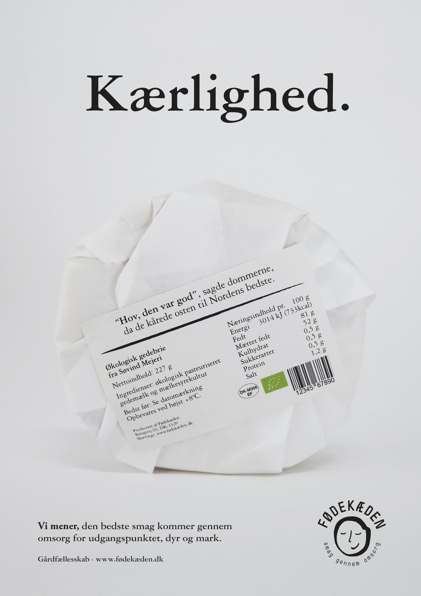

The Food Chain
This project set out to develop an umbrella identity (pacakging and a launch campaign) for a group of Danish farmers who share the ideology that good taste goes hand in hand with care for people and animals. The aim was to shape an eco-plus brand of standards higher than the organic requirements.
We named the brand ‘Fødekæden’ [the food chain] – an eco-system of farms, fields, animals and people who are mutually dependent. The logo was drawn up to visualize the brand’s soft values: well-being, comfort, a clear conscience and ‘ummmm’ – emphasized through the payoff ‘taste through care’. In contrast, Garamond accompanied by graphical, black-line illustrations, were used to reflect credibility and to set a classic and premium tone.
 
Our insight was that a considerate and caring outlook on food and resources simply tastes better. Reflecting the values of the brand, the campaign ran on using ‘the big words’ – care, love and thoughtfulness – which was enlarged on in print media.


This project was made in collaboration with Julie Plovgaard and Karoline Kastbjerg Schroeder. Music, mix and master by Rolf Grove✌